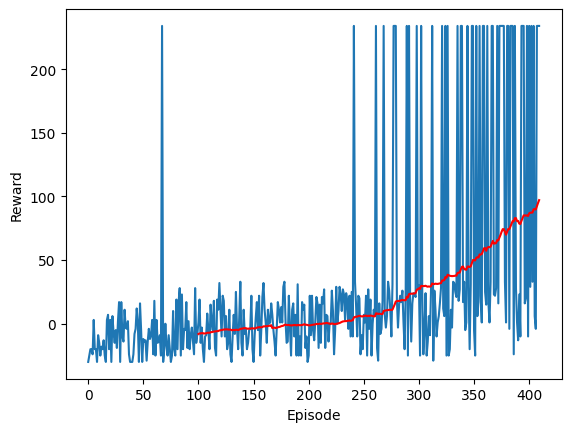

Views and opinions expressed are solely my own.
In a previous post - about two years ago - I speculated that one could solve Thrill Digger using reinforcement learning (RL). This post outlines my progress and thoughts around attempting to solve Thrill Digger using RL. Note: none of this work was used for my work at Georgia Tech and is separate from any work I have submitted to the courses.
This post solves the game, but only in a fixed environment. Further investigation will need to be done to extend this to the most general case, which I hope to provide in a future post.
This was done using Google Colab with an A100 GPU. We will begin by loading packages and representing the Thrill Digger game as its own class.
import numpy as np
import torch
import scipy
import torch.nn as nn
import torch.optim as optim
import matplotlib.pyplot as plt
# https://stackoverflow.com/a/24818304/3625022
from IPython.display import clear_output
#import optuna
# https://stackoverflow.com/a/52300696/3625022
from google.colab import drive
drive.mount('/content/drive')
# https://docs.python.org/3/tutorial/classes.html
class ThrillDigger:
# Initialize the environment, figure out rewards
def __init__(self, mode, seed = None):
super(ThrillDigger, self).__init__()
# https://numpy.org/doc/stable/reference/random/generator.html
self.rng = np.random.default_rng(seed)
self.mode = mode
self.seed = seed
# Set level of the game
# https://game8.co/games/Zelda-Skyward-Sword/archives/335443#hl_2
if mode == "beginner":
self.nrow = 4
self.ncol = 5
self.nBombs = 4
self.nRupoors = 0
self.initReward = -30
if mode == "intermediate":
self.nrow = 5
self.ncol = 6
self.nBombs = 4
self.nRupoors = 4
self.initReward = -50
if mode == "expert":
self.nrow = 5
self.ncol = 8
self.nBombs = 8
self.nRupoors = 8
self.initReward = -70
# Randomly place bombs and rupoors
# https://numpy.org/doc/stable/reference/random/generated/numpy.random.Generator.choice.html
idx = self.rng.choice(range(self.nrow * self.ncol),
size = self.nBombs + self.nRupoors,
replace = False)
bombIdx = idx[0 : self.nBombs]
rupoorIdx = None
if self.nRupoors > 0:
rupoorIdx = idx[self.nBombs : self.nBombs + self.nRupoors]
self.info = {"seed" : self.seed,
"mode" : self.mode,
"n_rows" : self.nrow,
"n_columns" : self.ncol,
"n_bombs" : self.nBombs}
# https://numpy.org/doc/stable/reference/arrays.scalars.html#numpy.byte
grid = np.zeros(self.nrow * self.ncol, dtype = np.int16)
grid[bombIdx] = -128 # smallest possible reward, game ends
if self.nRupoors > 0:
grid[rupoorIdx] = -10 # lose 10 rupees
# generate all negative grid spaces
grid = grid.reshape((self.nrow, self.ncol))
gridSign = grid.copy()
gridSign[gridSign < 0] = -1
# add up everything within distance 1 of a pixel via convolution
def neighbor_sums(grid):
# Generate kernel
kernel = np.ones((3, 3))
kernel[1, 1] = 0 # do not include the center
# https://docs.scipy.org/doc/scipy/reference/generated/scipy.signal.convolve2d.html
return(scipy.signal.convolve2d(grid, kernel, mode = 'same'))
# Gather the number of bad spaces around each pixel
nBad = -neighbor_sums(gridSign)
rewards = nBad
# Change rewards based on rupee amounts
# https://www.ign.com/wikis/the-legend-of-zelda-skyward-sword/Thrill_Digger
# https://numpy.org/doc/stable/reference/generated/numpy.isin.html
whereGreen = np.where(nBad == 0)
whereBlue = np.where(np.isin(nBad, [1, 2]))
whereRed = np.where(np.isin(nBad, [3, 4]))
whereSilver = np.where(np.isin(nBad, [5, 6]))
whereGold = np.where(np.isin(nBad, [7, 8]))
def set_rewards(grid, where, reward):
new_grid = grid.copy()
new_grid[where[0], where[1]] = reward
return(new_grid)
rewards = set_rewards(rewards, whereGreen, 1)
rewards = set_rewards(rewards, whereBlue, 5)
rewards = set_rewards(rewards, whereRed, 20)
rewards = set_rewards(rewards, whereSilver, 100)
rewards = set_rewards(rewards, whereGold, 300)
# Wherever the grid does not have a rupoor or bomb,
# change to the reward amount above
grid[grid == 0] = rewards[grid == 0]
# https://stackoverflow.com/questions/551038/private-implementation-class-in-python
self._grid = grid.copy()
self.allActions = np.indices(grid.shape).reshape(2, -1).T.reshape(-1, 2).tolist()
self.allActions = [tuple(action) for action in self.allActions]
self.actionIdx = [i for i in range(0, len(self.allActions))]
# Actions that may be taken
self.actions = self.allActions.copy()
def reset(self):
# Actions that may be taken
self.actions = self.allActions.copy()
# Number of rupees remaining
self._nRupeesRemain = len(np.where(self._grid.copy().flatten() > 0)[0])
# All actions and rewards taken to this point
self.actionsTaken = None
# stateNN is for processing states through a convolutional NN
# First channel: binary indicator for knowing/not knowing what is in the cell
# Second: binary indicator for if there is a bomb there. 0 by default.
# Third: rupee/rupoor amount. 0 by default.
self.stateNN = np.zeros((3, self.nrow, self.ncol))
# https://numpy.org/doc/stable/reference/generated/numpy.indices.html
# The first value is the accumulated balance.
# The second value is the possible indices in the grid.
# The third value denotes termination
self.state = [self.initReward, self.actionsTaken, self.actions, self.stateNN, False]
return(self.state)
# Choose a cell
def step(self, idxTup):
terminated = False
reward = 0
# If not a valid action, return 0 reward
actIdx = self.allActions.index(idxTup)
if idxTup not in self.actions:
reward = 0
# if a bomb is chosen, terminate
elif self._grid[idxTup[0], idxTup[1]] == -128:
terminated = True
# https://www.programiz.com/python-programming/methods/list/index
self.stateNN[0, idxTup[0], idxTup[1]] = 1 # we know what's there
self.stateNN[1, idxTup[0], idxTup[1]] = 1 # it's a bomb
else:
reward = self._grid[idxTup[0], idxTup[1]]
self.stateNN[0, idxTup[0], idxTup[1]] = 1 # we know what's there
self.stateNN[2, idxTup[0], idxTup[1]] = reward # throw the reward in
actionsArr = np.array(self.actions)
# print(actionsArr)
self._nRupeesRemain = len(np.where(self._grid[actionsArr[:,0], actionsArr[:,1]].copy().flatten() > 0)[0])
# If no rupees remain, return a reward of 200 for the rare item
# https://www.ign.com/wikis/the-legend-of-zelda-skyward-sword/Thrill_Digger
if self._nRupeesRemain == 0:
reward = 200
terminated = True
# (x, y, reward) from those chosen thus far
gridReward = (idxTup[0], idxTup[1], reward)
if self.actionsTaken is None:
self.actionsTaken = [gridReward]
elif idxTup in self.actions: # exclude repeating actions
self.actionsTaken.append(gridReward)
self.actions = [idx for idx in self.state[2] if idx != idxTup]
self.state = [reward, self.actionsTaken, self.actions, self.stateNN, terminated]
return(self.state)
# gather actions that are valid
def getValidActions(self):
return(self.actions)
# gather all actions
def getAllActions(self):
return(self.allActions)
# gather all action indices (for the neural net)
def getActionIdx(self):
return(self.actionIdx)
def getActionsTaken(self):
return(self.actionsTaken)
def getNNState(self):
return(self.stateNN)To explain the code above, at a high level, several enhancements have been made compared to the original post:
For the reasons given above, one could view the way I have represented as three channels, each with a 2D representation. This is extremely similar to how images are represented, in that images are 2D matrices with three channels: red, green, and blue. For this reason, analogous to how images are used in neural networks, I am using a convolutional neural network to learn how to play Thrill Digger.
class NeuralNetwork(nn.Module):
def __init__(self, OUTPUT_SIZE):
super(NeuralNetwork, self).__init__()
layers = []
# https://pytorch.org/docs/stable/generated/torch.nn.Conv2d.html#torch.nn.Conv2d
layers.append(nn.Conv2d(3, 3, 3, padding = 1))
layers.append(nn.ReLU())
layers.append(nn.Conv2d(3, 8, 3, padding = 1))
layers.append(nn.ReLU())
layers.append(nn.Conv2d(8, 16, 3, padding = 1))
layers.append(nn.ReLU())
layers.append(nn.Conv2d(16, 32, 3, padding = 1))
layers.append(nn.ReLU())
layers.append(nn.Conv2d(32, 64, 3, padding = 1))
layers.append(nn.ReLU())
layers.append(nn.Conv2d(64, 32, 3, padding = 1))
layers.append(nn.ReLU())
layers.append(nn.Conv2d(32, 8, 3, padding = 1))
layers.append(nn.ReLU())
layers.append(nn.Conv2d(8, 3, 3, padding = 1))
layers.append(nn.ReLU())
layers.append(nn.Flatten())
layers.append(nn.Linear(60, OUTPUT_SIZE))
self.stack = nn.Sequential(*layers)
def forward(self, x):
return self.stack(x)Some principles need to be outlined here:
OUTPUT_SIZE number of actions which action should be used.Now we continue with some setup as needed:
device = "cuda" if torch.cuda.is_available() else "cpu"
print("Using {} device".format(device))
M = 1000000 # number of episodes for training
mode = "beginner"
grid = ThrillDigger(mode)
initState = grid.reset()
MAXACTIONS = len(initState[2]) # gives the number of possible actions
loss = torch.nn.MSELoss() # MSE loss will be used for training
rewardEp = []
REWARD_AVG_EPS = 100 # how far back we will calculate a moving avg for the reward
REWARDTHRESH = 100 # how much the moving avg needs to be until we stop trainingWe define a greedy action: fix an \(\epsilon \in (0, 1)\). Generate a uniform random variate in \((0, 1)\), say \(u\). If \(u < \epsilon\), choose a random square in the grid. Otherwise, choose what the neural net suggests is the most optimal action.
def greedyAction(grid, model, epsilon):
prob = np.random.random()
isGreedy = (prob < epsilon)
allActions = grid.getAllActions()
if isGreedy:
action = np.random.randint(0, MAXACTIONS)
else:
newState = torch.from_numpy(grid.getNNState()).to(device).float().unsqueeze(0)
#print("non-greedy action:")
#print(newState)
with torch.no_grad():
# # https://pytorch.org/docs/stable/generated/torch.cat.html
# float32 is used by default,
# see https://discuss.pytorch.org/t/runtimeerror-mat1-and-mat2-must-have-the-same-dtype/166759/5
action = torch.argmax(model(newState).to(device))
action = action.item()
return(allActions[action])Next, we do some additional setup and additional variable storage for capturing the behavior of the neural nets:
C = 200 # how often to update the target neural net
expReplay = []
rewardEp = []
movingAvg = []
DECAYRATE = 0.01
# For each episode
epsilon = 1
replayCapacity = 10000
gamma = 0.99
learningRate = 0.001
minibatchSize = 45
# Initialize two neural nets: one for learning optimal actions and
# a "target" one for calibration.
model = NeuralNetwork(MAXACTIONS).to(device)
modelTarget = NeuralNetwork(MAXACTIONS).to(device)
# https://pytorch.org/docs/stable/generated/torch.nn.Module.html#torch.nn.Module.load_state_dict
modelTarget.load_state_dict(model.state_dict())
adam = torch.optim.NAdam(model.parameters(), lr = learningRate)
totalSteps = 0
epsilonFloor = 0
staticMap = True
if staticMap:
grid = ThrillDigger(mode)You may be confused at this point for why I am defining some of the above variables - that’s fine! Here, I will go through the paper which covers why we have the above variables. This paper draws on the approach from https://arxiv.org/abs/1312.5602, modified by https://huggingface.co/learn/deep-rl-course/en/unit3/deep-q-algorithm.
Algorithm. DDQN adapted to Thrill Digger with a static environment:
Initialize an initial epsilon
Initialize expReplay with capacity replayCapcity
Initialize model with parameters theta
Initialize modelTarget with parameters theta
for each episode:
decay epsilon
while the episode has not terminated:
observe a 3-channel state s_t
execute a greedy action a_t on the grid
observe a reward r_t due to a_t
observe a 3-channel state s_(t+1) due to a_t
determine whether a_t leads to the episode terminating
append to expReplay (s_t, a_t, r_t, s_(t+1), terminated)
when expReplay is sufficiently large:
sample with replacement from expReplay of size minibatchSize
calculate y = sum(r_j + gamma * max_a'[modelTarget(s_{t+1}, a')] * terminated_flag)
use gradient descent to update model using ADAM, comparing model(s_t in minibatch) and y
every C steps:
update modelTarget parameters with model parametersHere, I show the code for executing the above, with a plot of the results:
for i in range(M):
if epsilon < epsilonFloor:
epsilon = epsilonFloor
else:
epsilon *= (1 - DECAYRATE)
if not staticMap:
grid = ThrillDigger(mode)
initState = grid.reset()
terminated = False
step = 0
totalReward = grid.initReward
while not terminated:
#print(grid.getNNState())
adam.zero_grad()
action = greedyAction(grid, model, epsilon)
# print(action)
nextState = grid.step(action)
step += 1
totalSteps += 1
reward = nextState[0]
terminated = nextState[-1]
# print(terminated)
totalReward += reward
if len(expReplay) > replayCapacity:
expReplay = expReplay[1:]
expReplay.append([initState[3], action, reward, nextState[3], terminated])
# print(flattenState(initState[3]))
if len(expReplay) >= minibatchSize:
minibatch = np.random.choice(range(len(expReplay)), size = minibatchSize, replace = False)
initStates = [expReplay[m][0] for m in minibatch]
actions = [expReplay[m][1] for m in minibatch]
rewards = [expReplay[m][2] for m in minibatch]
nextStates = [expReplay[m][3] for m in minibatch]
terminatedTens = [expReplay[m][4] for m in minibatch]
notTerminatedTens = [not t for t in terminatedTens]
# Convert to action indices
actions = [grid.getAllActions().index(action) for action in actions]
initStates = torch.tensor(initStates).float().to(device)
actions = torch.tensor(actions).int().to(device)
rewards = torch.tensor(rewards).float().to(device).unsqueeze(1)
nextStates = torch.tensor(nextStates).float().to(device)
terminatedTens = torch.tensor(terminatedTens).float().to(device).unsqueeze(1)
notTerminatedTens = torch.tensor(notTerminatedTens).float().to(device).unsqueeze(1)
#print("nextStates.shape: " + str(nextStates.shape))
with torch.no_grad():
maxQ = torch.max(modelTarget(nextStates), 1)[0].unsqueeze(1) * notTerminatedTens
y = torch.add(rewards, torch.mul(maxQ, gamma))
q = model(initStates)
# Gather Q(state, action)
q = q[torch.arange(initStates.size(0)), actions].unsqueeze(1)
diff = loss(q, y)
diff.backward()
adam.step()
initState = nextState
if totalSteps % C == 0:
modelTarget.load_state_dict(model.state_dict())
rewardEp.append(totalReward)
if i > REWARD_AVG_EPS - 1:
movingAvgReward = np.mean(rewardEp[-REWARD_AVG_EPS:])
movingAvg.append(movingAvgReward)
if movingAvgReward >= REWARDTHRESH:
print("Reward threshold met with " + str(REWARD_AVG_EPS) +
"-moving average reward of " + str(round(movingAvgReward, 2)) +
". Terminating training...")
break
else:
movingAvgReward = 0
movingAvg.append(None)
if i < M - 1 and movingAvgReward < REWARDTHRESH:
clear_output(wait = True)
# Display status
print("Episode {0}".format(i), end=": ")
print("total reward: {0}".format(totalReward), end = ", ")
print("moving avg reward: {0}".format(movingAvgReward), end = ", ")
print("epsilon: " + str(epsilon))
# # Plot the reward
plt.figure(0)
plt.xlabel('Episode')
plt.ylabel('Reward')
plt.plot(np.array(rewardEp[:i]))
plt.plot(np.array(movingAvg[:i]), color = 'red')
plt.show()After 411 episodes, here is the behavior of model. The blue is the reward each episode, and the red is the average reward over the most recent 100 episodes.

Though this model does excellently in training, it fails to generalize: the model has essentially learned how to play one specific Thrill Digger environment. It cannot play new Thrill Digger environments particularly well.
Thrill Digger, as I soon discovered, breaks one of the core principles of reinforcement learning. It is not a Markov decision process (MDP) for the following reasons:
This problem, I believe, is not an MDP but a Partially Observable Markov Decision Process (POMDP). I will be spending time (this summer, hopefully) learning deep reinforcement learning methods for solving POMDPs.
This project, though it is far from being finished, draws from material that I have learned through OMSCS via Computer Vision, Reinforcement Learning, and Deep Learning. I am thankful for the many people I have interacted with throughout these courses and appreciate that these courses have provided me a path toward solving this problem. And who knows, maybe this problem isn’t solvable at all. But regardless, I have learned a lot through this one problem that has followed me the last few years.